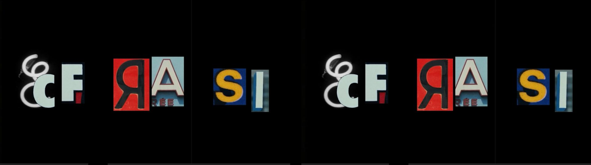
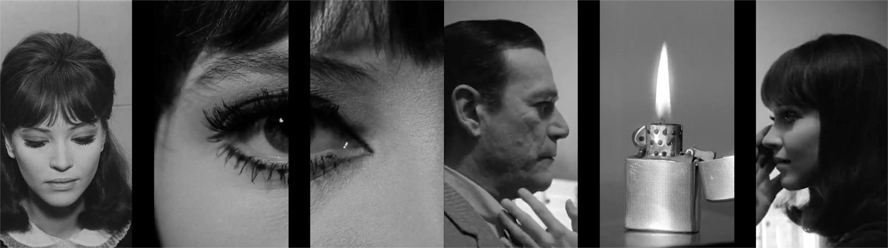
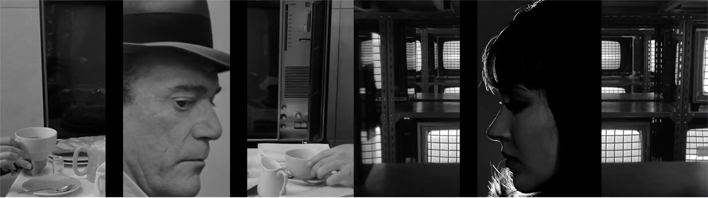
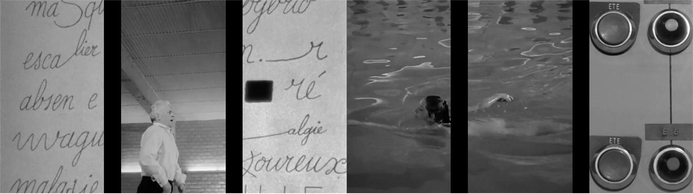
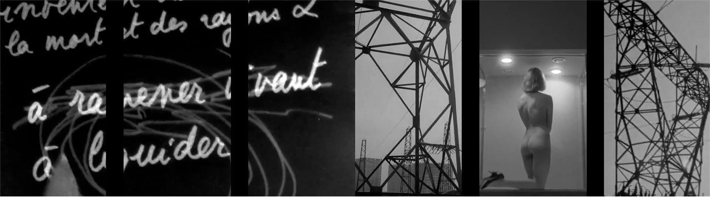
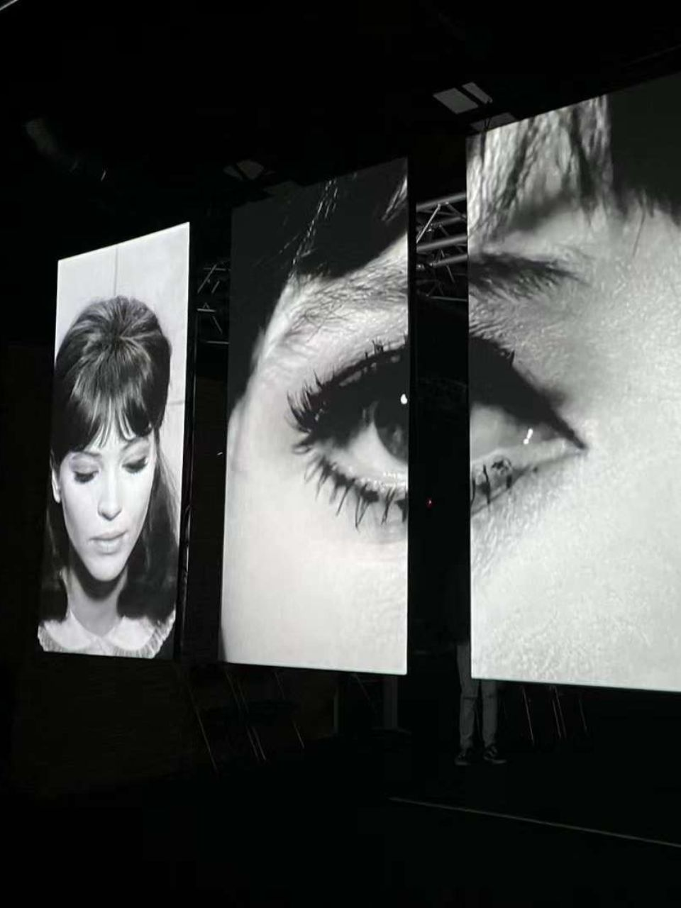
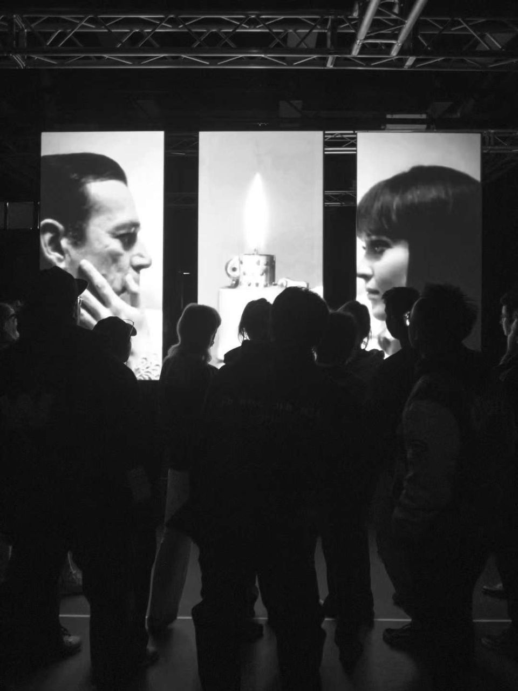

Ecfrasi
A video installation on sound, poetic language and image in Jean-Luc Godard’s cinema.



Ecfrasi is a video installation dedicated to the use of sound and poetic language in the films of Jean-Luc Godard.
The installation pays tribute to the relationship between image and language, seeking a possible synthesis through poetry and free sound. The audio track is composed from three poems quoted in Alphaville, Le Mépris and Pierrot le Fou. Between one poetic fragment and another, musical phrases, noises and onomatopoeic sounds appear as interferences, sampled from other films of Godard’s early production, especially Two or Three Things I Know About Her and A Woman Is a Woman.
The visual part is built through montage, creating a work of ekphrasis starting from the spoken words. This flow is interrupted by more graphic sequences, using fonts, written elements and textual fragments taken from Godard’s films.



